50W DC-DC Dual Active Bridge Converter
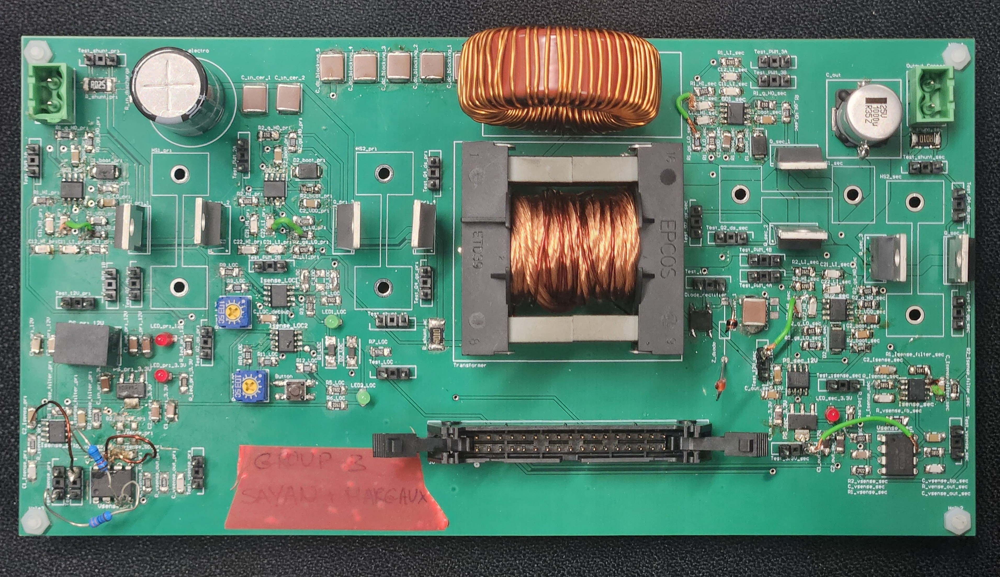
Project Overview
My project collaborator, Margaux Lari, and I designed a 50W DC-DC Dual Active Bridge (DAB) converter from scratch. Both of us were equally involved with theoretical calculations, PLECs simulations, Altium PCB design, soldering, and bench testing. The design was based on this Texas Instruments reference design.
Design Specifications
- Nominal output power: 50 W
- Input voltage range: 30 V to 60 V (Nominal: 50 V)
- Target output voltage: 12 V
- Switching frequency: 30 kHz
- Maximum output voltage ripple: 2%
Sizing and Simulations
Inductor Sizing
For the input voltage range of 30-60V, we calculated a required inductance of 69 μH and phase shift range of 0.24-0.52 rad using the DAB power transfer equation.
Capacitor Sizing
Under a worst-case input of 30V, we sized the output capacitance to 576 μF by determining the charge fluctuation over one switching period due to the full-bridge current. Modelling this in PLECs allowed us to obtain simulated full-bridge current plots, which we used to validate the plots from our calculations. We performed similar calculations and simulations to size the DC blocking capacitance, input capacitance, and discharge resistance.
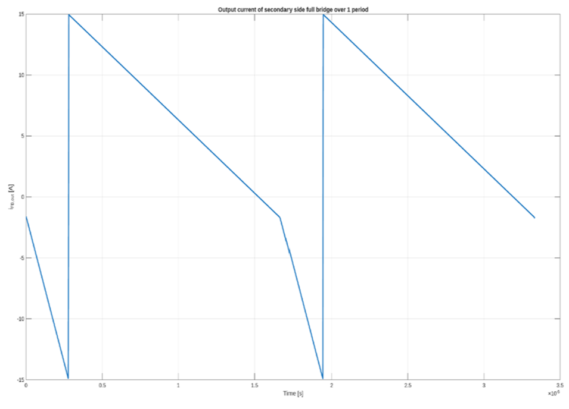
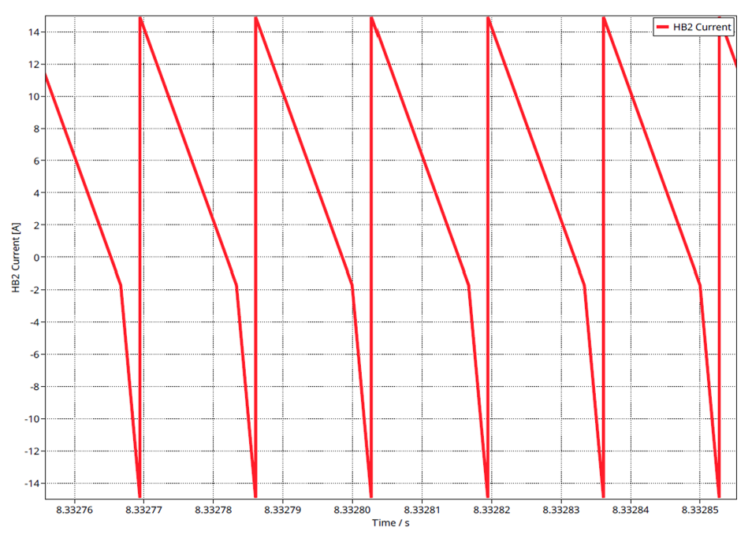
Validation
Afer sizing all the inductances and capacitances, we modelled the entire power stage of the converter in PLECs to confirm V/I waveforms, output ripple, and the minimum phase-shift threshold for zero-voltage switching (φ > 0.63).
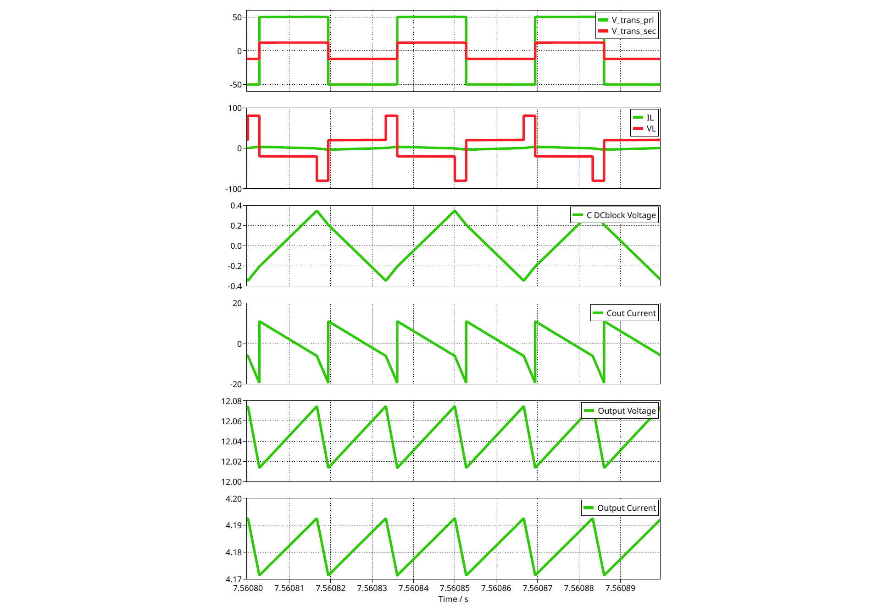
Semi-Conductor Selection
We selected the Nexperia PHP18NQ11T and Infineon IRLB8743PbF MOSFETS for the primary and secondary bridge circuits, respectively. These were chosen to ensure:
- Vds,max > Vbridge,max
- Icont > Ibridge,max
- Rds,on is as low as possible to minimize losses
Using the datasheet of the MOSFETS and our converter's parameters, we calculated the MOSFET currents and switching losses, giving us a predicted semiconductor efficiency of 94.9%.
Custom Transformer
Component Selection
We selected a ETD39/20/13 core with N87 ferrite material using the Kgfe method, keeping peak flux density below the 0.30 T saturation limit. Our target primary winding turn ratio was 4.2, with an additional auxiliary winding turn ratio of 2.8 to power the secondary side power stage.
The chosen core provided us with constraints on the available winding area and mean length of turns. Then, based on a target current density of 300 A/cm2, we selected the following winding wires:
- Primary: M2 (current density of 219.05 A/cm2)
- Secondary: L4 (current density of 229.88 A/cm2)
- Auxiliary: M1 (current density of 242.42 A/cm2)
By optimizing our design for its window utilization factor, we predicted copper and core loss of 0.98 W.
Testing
After winding the transformer by hand, we performed the following validation tests:
- Open circuit test with an LCR meter to determine a magnetizing inductance of 4.996 mH
- Short circuit test with an LCR meter to determine a leakage inductance of 10.58 μH
- Saturation test with a power choke meter to determine a saturation limit of 0.11 A
- Turn ratio test with an oscilloscope to determine an achieved primary turn ratio of 4.97
- Heat run test with a thermal camera to determine a temperature of 31°C after operating for 15 minutes
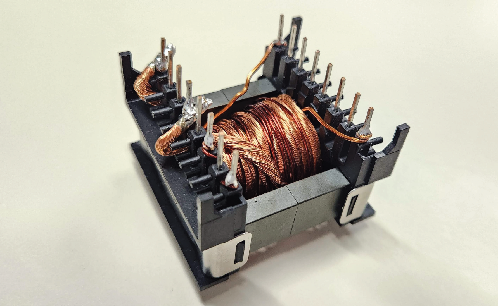
Custom Inductor
Component Selection
Based on our transformer's measured leackage inductance, we calculated that a 58.86 μH external inductance would be required to achieve our total desired inductance of 69 μH.
We selected a T157-2 core because it provided a reasonable compromise between the:
- Number of turns required (lower being better to minimiz copper losses)
- magnitude in inductance of each step (lower being better for more precise control over the total inductance)
Testing
After winding the inductor, by hand, we performed the following validation tests:
- Inductance test with an LCR meter to determine an achieved inductance of 59.43 μH
- Saturation test with a power choke meter to verify the inductor does not saturate under normal operating conditions
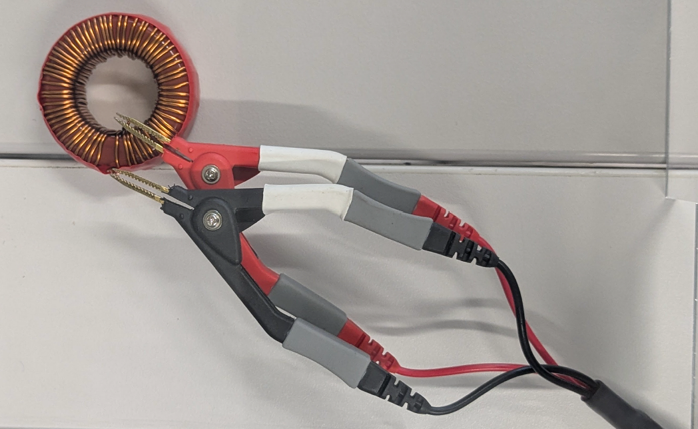
Schematic Design
We selected resistors, capacitors, and other components from DigiKey and Mouser using the E96 standard values and a 1206 footprint size. In many cases, we had to make practical considerations, such as putting capacitors in parallel to achieve the theoretical values we previously sized.
Then, we designed a schematic in Altium with the following sections:
- Power stage circuit with MOSFETS, transformer, inductor, and capacitor banks to filter ripples
- Gate driving circuit with UCC27288 dual-channel gate drivers
- Auxiliary power supply circuit using DC-DC regulators to provide stable 12V and 3.3V
- Current sensing circuits using a shunt resistor, INA201 amplifier, and first order low pass filters with a cutoff frequency of 1.59 kHz to attenuate 30 kHz switching noise
- Voltage sensing circuits using a voltage divider and MCP6241 amplifier
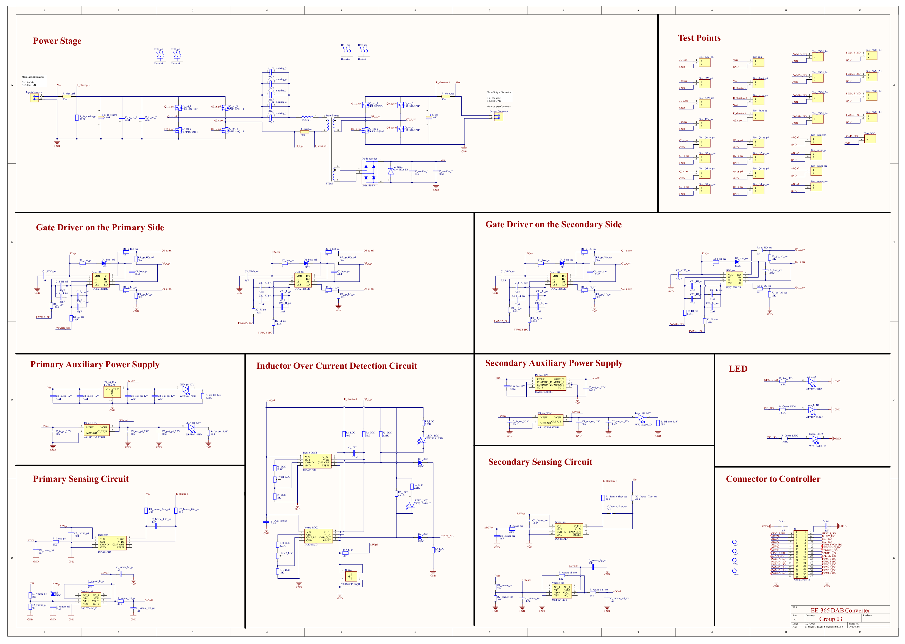
PCB Layout
Using Altium, we designed a 2-layer PCB. The primary considerations were:
- Separating the board into different sub-circuits for simpler debugging
- Sizing traces to ensure a current density below 35 A/mm2
- Ensuring it would be easy to solder by hand
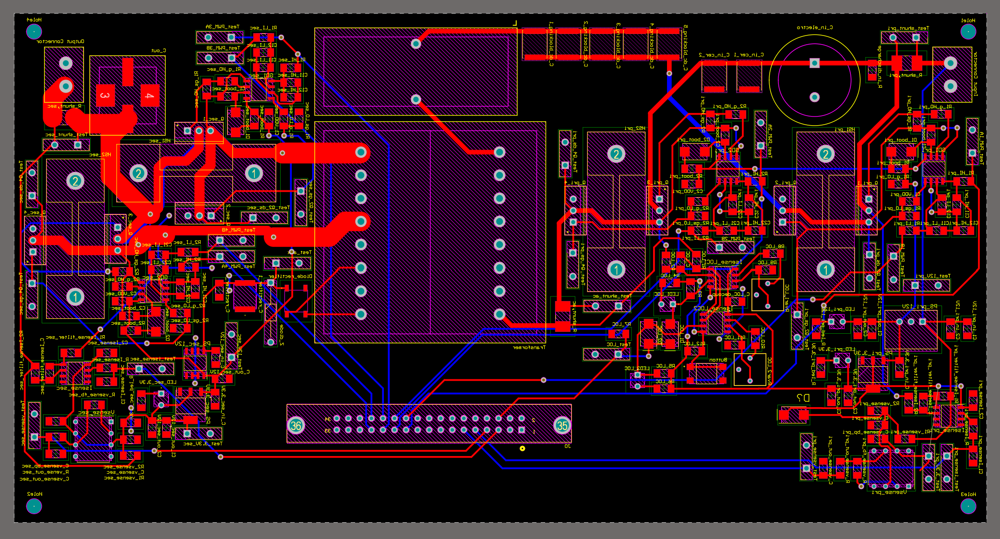
Bring-Up
Before connecting the Texas Instruments F28335 digital controller to our PCB for output voltage regulation based on a PLECs model of the converter, we ran offline simulations. These helped us validate soft-start implementation and provided us with deadtime estimates of 39 ns and 24 ns for the primary and secondary sides, respectively. We were also able to simulate the open loop response of the converter to variations in input voltage.
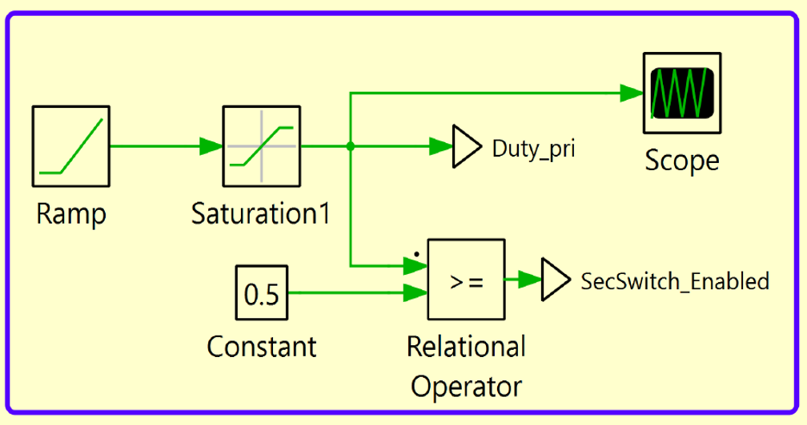
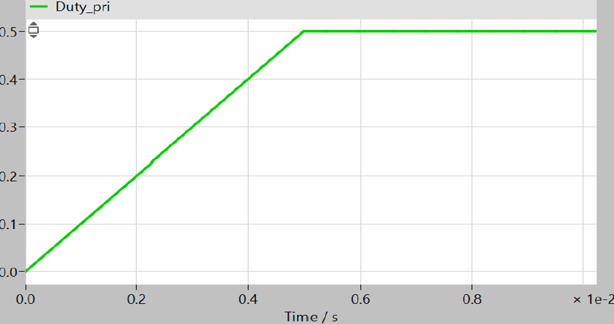
For hardware bring-up, we soldered and tested each sub-circuit independently using tools such as an oscilloscope, electronic load, and thermal camera.
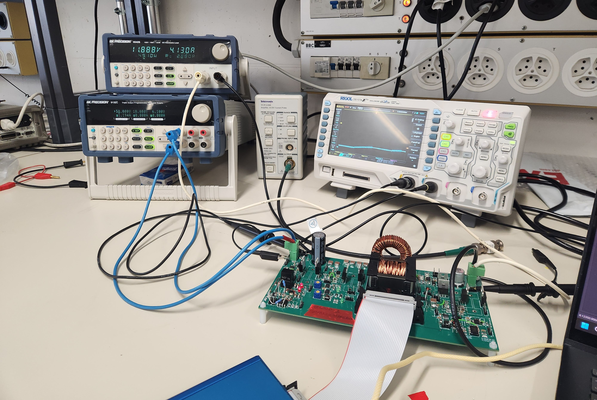
Results
The final converter achieved an output of 4.13 A at 11.89 V under a nominal input of 1.19 A at 50 V. This translates to an efficiency of 83%. A future step would be to implement closed-loop control to automatically adjust the phase shift in response to varying input voltages.